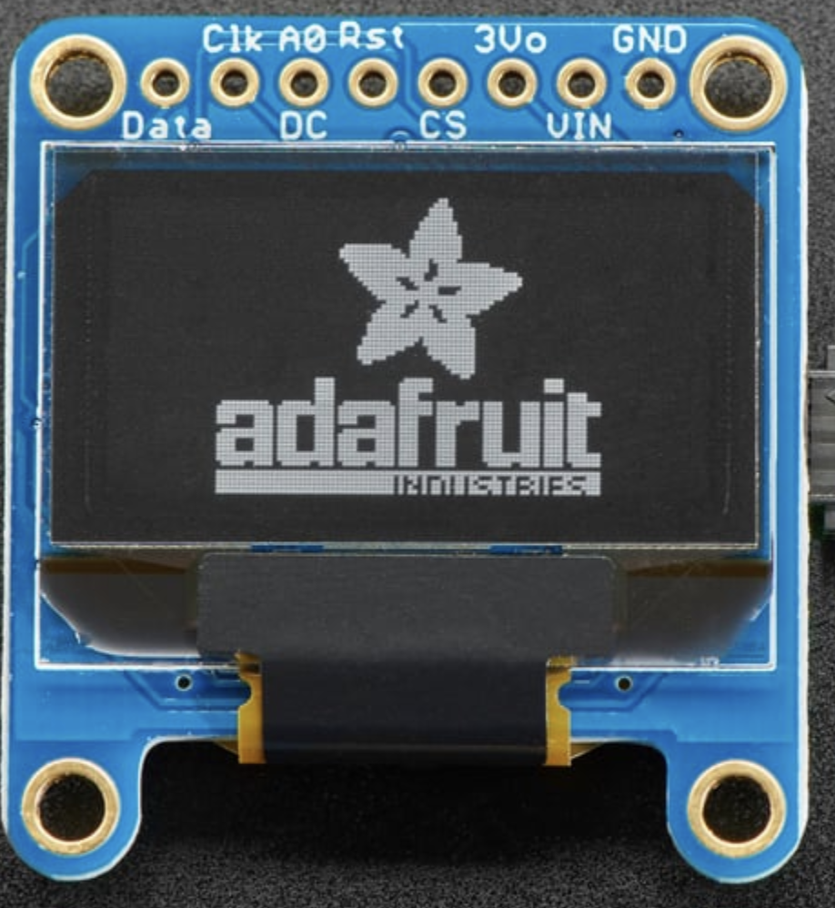

Sensor Details
Learn more about the sensors and components used in our gauntlet prototype.
Learn more about the sensors and components used in our gauntlet prototype.
The Gas Sensor (MQ-135) is a gas-sensitive semiconductor sensor that detects dangerous gas leaks and provides early warnings. It is capable of detecting a wide range of gases, including benzene, alcohol, smoke, and other harmful substances commonly found in earthquake-stricken buildings. The sensor's analog output is read using an analog input pin of the Arduino board.
For more information, refer to the Gas Sensor (MQ-135) Datasheet.
The Temperature and Humidity Sensor (Adafruit AM2320) is a digital sensor that measures ambient temperature and humidity levels. It is based on the I2C communication protocol, allowing easy integration with the Arduino board. The sensor provides accurate and reliable temperature and humidity readings, making it suitable for environmental monitoring in rescue missions.
For more information, refer to the Temperature and Humidity Sensor (Adafruit AM2320) Datasheet.
The Ultrasonic Distance Sensor (HC-SR04) is a non-contact sensor that measures distances by sending and receiving ultrasonic waves. It consists of a transmitter and a receiver module, and it calculates distance based on the time taken for the sound waves to bounce back after hitting an obstacle. The sensor is widely used for navigation in dark rooms and obstacle detection.
For more information, refer to the Ultrasonic Distance Sensor (HC-SR04) Datasheet.
The GME 12864-13 OLED is a graphic display module with a resolution of 128x64 pixels. It is used to display real-time sensor readings and other information to the rescuer. The OLED module is connected to the Arduino board, allowing for easy data visualization and monitoring of the gauntlet's status.
For more information, refer to the GME 12864-13 OLED Datasheet.
The NeoPixel Ring 12 is a circular arrangement of 12 individually addressable RGB LEDs. It is used to respond to temperature and humidity values based on the code implemented in the Arduino board. The NeoPixel Ring provides visual feedback to the rescuer, changing colors and patterns based on environmental conditions.
For more information, refer to the NeoPixel Ring 12 Datasheet.
The ADAfruit ESP32 Feather is the main microcontroller board used in our gauntlet prototype. It is based on the ESP32 chip, providing Wi-Fi and Bluetooth capabilities. The ESP32 Feather acts as the brain of the gauntlet, processing sensor data, and controlling various components to ensure the rescuer's safety and provide real-time data monitoring.
For more information, refer to the ADAfruit ESP32 Feather Datasheet.
The buzzer is a simple audio component used in the gauntlet to provide audio alerts based on distance readings from the Ultrasonic Distance Sensor. It emits sound when the gauntlet detects obstacles or short distances, alerting the rescuer to potential hazards.
For more information, refer to the Buzzer Datasheet.
.